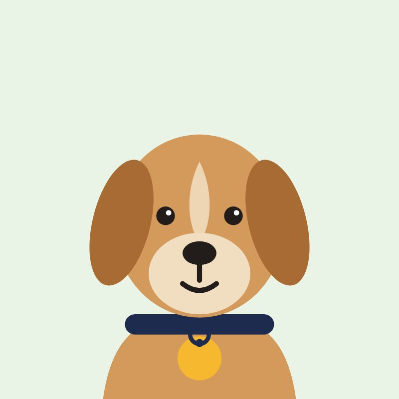
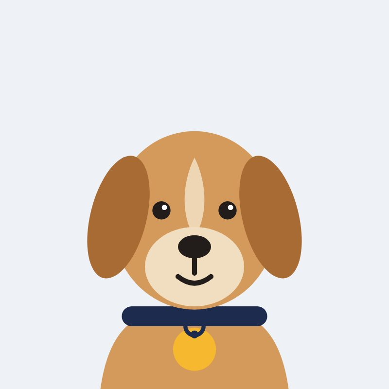

Демо-версия: данные не сохраняются на сервере
Представитель приюта
Если точной нет — укажите примерную
По ней каталог сортирует «Дольше ждут»
Каким питомец бывает дома и на прогулке. От 20 символов
85 / 2000
Диета, лекарства, ограничения на прогулках
0 / 2000
Как питомец попал в приют и что с ним было дальше
0 / 5000
До 10 фото в JPG, PNG или WebP, до 8 МБ каждое. Обложка видна в каталоге; без выбора обложкой станет первое фото. Порядок меняется перетаскиванием или стрелками.


Можно добавить ещё 7
«Нашёл дом» закроет открытые заявки на питомца
Динара Абенова